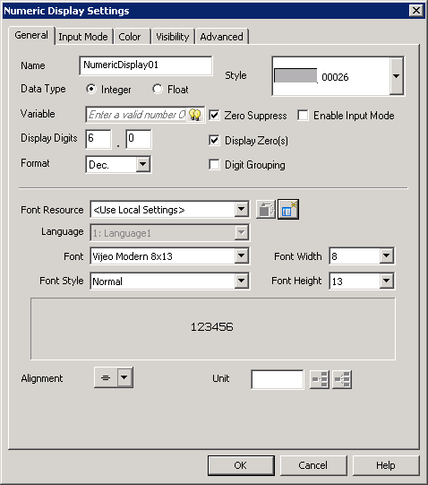
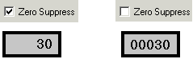
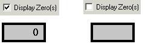
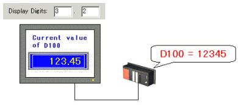

|
|
|
|
|
|
|
|
Use the General tab to define basic properties of the numeric display, string display, date display, or time display, such as the data type, variable, display format, and alignment.
The General tab differs depending on the display you choose. For information on a Numeric Display, see Section 11.3.1, Setting Up Numeric Display. For information on a Date Display, see Section 11.4.1, Setting Up Date Display. For information on a Time Display, see Section 11.5.1, Setting Up Time Display. For information on a String Display, see Section 11.6.1, Setting Up String Display.

The following table describes the General tab properties.
|
Property |
Description |
||||||||||||||||||||||||||||||||||||||||||||||||||||||
|
Name |
The object's name. Whenever an object is created, a default name is generated. When renaming an object, its name must be unique within the target, must contain no more than 32 valid characters, and must follow the naming conventions. For details, see Appendix 9, Naming Conventions. |
||||||||||||||||||||||||||||||||||||||||||||||||||||||
|
Data Type |
This field is available for a Numeric Display. Select a data type from the following:
|
||||||||||||||||||||||||||||||||||||||||||||||||||||||
|
Variable |
This field is available for a Numeric Display and String Display. Specify an address, variable, or expression used to display a numeric value, string, date, or time. Insert a variable from the list or type in a new variable name to create a new variable. |
||||||||||||||||||||||||||||||||||||||||||||||||||||||
|
Style |
Use this list box to select the data display style you want. |
||||||||||||||||||||||||||||||||||||||||||||||||||||||
|
Zero Suppress |
This field is available for Numeric Display. Select to suppress or display leading zeros (for example, display 30 instead of 00030 when the display digit is set to 5.0).  |
||||||||||||||||||||||||||||||||||||||||||||||||||||||
|
Display Zero(s) |
This field is available for Numeric Display. Select to display a zero when data is equal to (0).  |
||||||||||||||||||||||||||||||||||||||||||||||||||||||
|
Display Digits |
This field is available for Numeric Displays. Specify the number of digits displayed to the left and right of the decimal point. The number of digits that can be entered in the numeric display is not limited by these parameters but by the variable's limits.
For an integer data type, the total number of digits for display must be no more than 10:
For a REAL data type, the total number of digits for display depends on the format specified for the display:
 |
||||||||||||||||||||||||||||||||||||||||||||||||||||||
|
Format |
The Format property provides different display options depending on whether the Data Type is an integer type or a REAL.
|
|
Selection |
Example (August 18, 2003) |
|
yyyy/mm/dd |
2003/08/18 |
|
yyyy/dd/mm |
2003/18/08 |
|
mm/dd/yyyy |
08/18/2003 |
|
dd/mm/yyyy |
18/08/2003 |
|
yy/mm/dd |
03/08/18 |
|
yy/dd/mm |
03/18/08 |
|
mm/dd/yy |
08/18/03 |
|
dd/mm/yy |
18/08/03 |
|
mm/dd |
08/18 |
For a Time Display, select the display format from the following options. The default format is hh:mm (24 hours).
|
Selection |
Example (14 hours 13 minutes 12 seconds) |
|
hh:mm:ss (24 Hours) |
14:13:12 |
|
hh:mm (24 Hours) |
14:13 |
|
hh:mm:ss (12 Hours) |
2:13:12 |
|
hh:mm:ss AM/PM (12 Hours) |
2:13:12 PM |
|
hh:mm (12 Hours) |
2:13 |
|
hh:mm AM/PM (12 Hours) |
2:13 PM |
When Data Type is REAL for a Numeric Display, select a display format for values from the drop-down list:
Fixed. Displays the number of decimal digits as specified in the Display Digits property. If the REAL value has more decimal digits, the value is rounded up to the next digit. Both whole digits and decimal digit fields are enabled.
Auto. Displays the number of decimal digits as determined by the REAL value. When set to Auto:
Display Digits property can only be set to whole digits.
The Suppress Zero property is disabled.
The same number of digits will display for any input. Where necessary, 0 will be used to fill in the digits to the right of the decimal point. Asterisks are displayed when whole numbers are greater than the allowable digits. For example, if whole digits is set to 9, the values in the Numeric Display will be as follows:
|
Input |
Numeric Display |
|
123 |
123.000000 |
|
1234567890 |
********** (9 digits) |
|
12345.6 |
12345.6000 |
|
123456.78 |
123456.780 |
|
123456.789 |
123456.789 |
If the REAL value has more decimal digits, the value is rounded up to the next digit.
Scientific. Displays numbers in scientific notation. When the Scientific property is selected, the Numeric Display's popup input keypad only accepts scientific notation values. For more information on the Scientific Notation keypad, see Section 11.9.2.2, Numeric Keypads, Setting up Scientific Notation Keypad.
Maximum and Minimum Scientific Notation Values:
For information on the input range, see the input range for REAL variable types described in Section 6.2.1.1, Basic Variable Types: REAL.
Input Examples:
|
Input |
Numeric Display |
|
- 1.234e07 |
-1.234e+07 |
|
9.88731e-21 |
9.88731E-21 |
|
Illegal REAL numbers |
*.***E+** |

REAL data type's data precision is limited to seven digits. Although more than seven digits can be displayed in the Numeric Display, only the first seven digits are guaranteed. For more information on REAL data types, see Section 6.2.1.1, Basic Variable Types: REAL.
Use Digit Grouping
This property is available when the Data Type is set to an integer type for a Numeric Display. When this property is enabled, the digits of an integer are grouped according to the format and the Digit Grouping Character set under each language in the panel. See Section 20.2.6 Adding a User Application Language to set the Digit Grouping Character for each language.
|
Format |
Grouping Character |
Number of Digits per Group |
|
Dec. or Unsigned |
As per each language |
3 |
|
Hex. or Bin. |
space |
4 |
|
Oct. |
space |
3 |
Display Length
This field is available for a String Display. Select the length of the string. The value range is 1 to 100.

The display length should be less than or equal to the number of bytes defined in the String variable's NumOfBytes property.
For more information about displaying strings, see Sections 11.6.1, Setting Up String Display and 11.6.2, Displaying Text with Character Codes.
Enable Input Mode
Enables data input using a keypad. Select this option to enable the options listed in Section 11.2.2, Input Mode Tab. When this check box is selected, the Enable Input Mode check box in the Input Mode tab is also selected.

When a 32 bit unsigned integer variable is used in a Numeric display and input mode is enabled, the variable's min/max range is disabled and automatically set from 0 - 4,294,967,295.
Font Resource
Select the Font Resource you created in the Resource Library to use for the Display's Labels. For more information on using Resources in your parts, see Section 21.1.4.2, Selecting Resources for Your Part.
Language
Select the display language. You can apply different font settings for each language.
Font
Specify the font.

You should select a font that supports the characters you want to use. For example, if you enter the Euro character (€) in the Unit property, the font you select in the Font property should support this character. To create the Euro character, it is recommended you use the Vijeo-S Albany or Vijeo-S Utah font.
For a list of fonts supported for your target machine, see Appendix 5, Hardware Specification.
Font Style
Select Normal, Bold, or 3D.
Width
Define the font height and width.
Height
Preview
The preview window shows you what the text will look like.
Alignment
Select the horizontal (left, center, or right) and vertical (top, middle, or bottom) alignment of the display text.

Define the unit of measure the numeric display digits represent. For example, if the numeric displays digits show kilograms, put kg into the Unit field.
Language Buttons
The language buttons are available when multiple languages are set up in the Language node. For more information on setting up languages, see Section 20.2, Switching Languages.
Overwrite Text in All Languages Button
Overwrites the text in all languages with the text from the Unit field.
Copy Text to all Empty Languages Button
Copies the text defined in the label and pastes it in the languages that have empty labels.